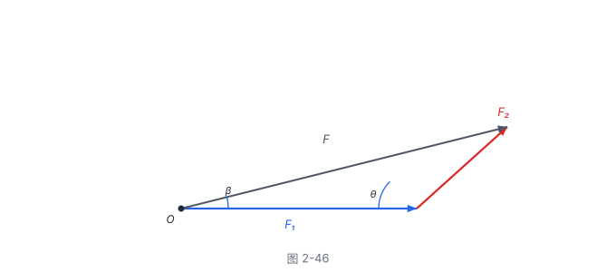
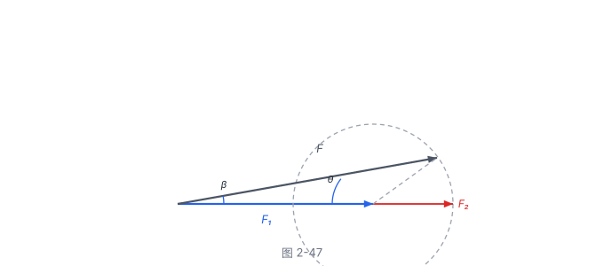

五、用矢量三角形巧求角度
例题合力与 F₁ 的夹角何时最大
两个共点力 \( F_1 \) 和 \( F_2 \) 的合力为 \( F \)，且有 \( F_1 > F_2 \)，现保持 \( F_1 \) 和 \( F_2 \) 的大小不变，改变它们之间的夹角 \( \theta \)，要使 \( F \) 和 \( F_1 \) 的夹角 \( \beta \) 达到最大值，则 \( \theta \) 的大小为多少？\( \beta \) 的大小为多少？

解如图 2-46 所示，由图可知有如下关系式：
\[ \tan\beta = \frac{F_2 \sin\theta}{F_1 + F_2 \cos\theta} \]
要知道 \( \theta \) 的何时到达最大值，对高中学生来说，是比较困难的。
如果用矢量三角形的方法来处理就比较简单了。如图 2-47 所示，以矢量 \( F_1 \) 的末端为圆心，以矢量 \( F_2 \) 的大小为半径画一个圆，则合力 \( F \) 的端点在圆周上，当合力 \( F \) 的方向与圆相切时，合力 \( F \) 与 \( F_1 \) 的夹角 \( \beta \) 为最大，如图中虚线所示。此时力 \( F_1 \) 与 \( F_2 \) 的夹角

\[ \theta = 180^\circ - \arccos \frac{F_2}{F_1} \]
合力 \( F \) 与 \( F_1 \) 的夹角
\[ \beta = \arcsin \frac{F_2}{F_1} \]
答当 \( \theta = 180^\circ - \arccos \dfrac{F_2}{F_1} \) 时 \( \beta \) 最大，\( \beta_{\max} = \arcsin \dfrac{F_2}{F_1} \)。